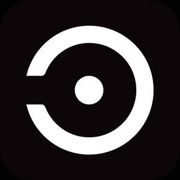

Trade Mark Journal No.2026/007 13 February 2026
UK00004331138 28 January 2026 (9,10,35)

- Class 9
- Ear pads for headphones; Headphones; Smartwatches; Smartglasses; Wearable computers; Covers for smartphones; Smart bracelets; Diagnostic apparatus, not for medical purposes; Monitoring apparatus, other than for medical purposes; Neural helmets, not for medical purposes; Television apparatus; Computer application software for use with wearable computer devices; Computer peripheral devices; Electrodes; Computer software applications, downloadable; Downloadable application software; Head-mounted displays; Electronic publications, downloadable; Cellular telephone cases; Printed circuit boards.
- Class 10
- Ear plugs for sleeping; Diagnostic apparatus for medical purposes; Body rehabilitation apparatus for medical purposes; Medical apparatus and instruments; Transcutaneous electrical nerve stimulation electrodes; Electrodes for medical use; Transcutaneous electrical nerve stimulation instruments; Acupuncture instruments; Electronic acupuncture instruments; Nerve muscle stimulators; Apparatus for nerve stimulation; Massage apparatus; Low frequency electric therapy apparatus; Physiotherapy apparatus; Heart rate monitoring apparatus; Respiration monitors; Soporific pillows for insomnia; Medical instruments for recording physiological data; Medical devices for moxibustion therapy; Vibromassage apparatus.
- Class 35
- Display services for merchandise; Promotional services; Providing commercial and business contact information; Business information (Provision of -); Research of business information; Dissemination of commercial information; Displaying advertisements for others; Dissemination of advertisements; Promotional marketing; Advertising, marketing and promotional services; Advertising, promotional and marketing services; Advertising, marketing and promotion services; Dissemination of advertisements via the Internet; Conducting business and market research surveys; Retail services in relation to information technology equipment; Subscriptions (arranging of) to books, reviews, newspapers or comic books; Retail purposes (Presentation of goods on communication media, for -); Computerised data processing; Market analysis; Market analysis services.
Shenzhen BrainCLOS Technology Co., Ltd.
Representative: IPP MASTER LIMITED